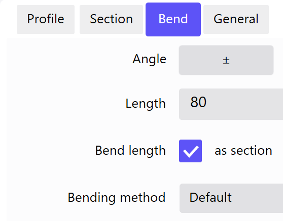

The Profile Editor can be used to create profiles consisting of at least two sides.
Tap on the main screen to display an angle scale. In addition, an overlying window is displayed in the top left corner containing values for the internal angle and length of the active side.
You can use the following view bars on the right-hand side for navigation.
| Symbol | Meaning |
|---|---|

|
Zoom functions |
| Position | |

|
Edit |
Header
The header displays the main functions and menus. The header is displayed in all views.
The following buttons with subfunctions can be opened.
Use this menu to launch programs and configure additional settings.
| Symbol | Meaning |
|---|---|

|
Launches or switches to the BySoft Cell Control Bend The bend is an element of the profile programming and designates a change in shape of the workpiece. A number of attributes can be assigned to a bend: side length, bend angle, bend radius (optional), initial-bend angle (optional), additional attributes (optional). A bend can consist of several bending processes. program |
| Launches the Administrator program | |

|
Opens the Settings dialog (See «Settings») |
 Help functions
Help functions

You can create profiles by entering a geometry or specifications in a table.
Tip: Press the Properties button to edit the angle and length of the sides on the Bends tab.
Geometric
Tap on the angle scale to activate input.
-
Press the button. The angle scale is displayed.
- Drag it to define the length and angle of the first side. The angle scale always moves to the end point of the side.
- To append a second side to the end of the first, drag it again to a certain angle.
- Use the Save function to save the finished profile under a new name.
- Use the Export function to automatically open the part in the BySoft Cell Control Bend application where it can be edited.
Table
Alternately enter side length and angle using the Table function.
- Press the Table button on the toolbar.
-
 Press the button.
Press the button. - Enter the length of the first side in the input box and press OK to confirm.
- Enter the angle for the second side in the input box and press OK to confirm.
- Enter the length of the second side in the input box and press OK to confirm.
- Repeat steps 4 thru 5 until you have created all the sides you need.
- Use the Save function to save the finished profile under a new name.
- Use the Export function to automatically open the part in the BySoft Cell Control Bend application where it can be edited.
The existing technology can be adopted if “just” the bend length is modified on an existing part.
NOTE: If bend length is changed, the tool setup plan must be updated and the backgauge axes repositioned in the Technology menu in the ByVision Cutting program.
Requirement:
- the number of sections must be the same.
- The number of surfaces must be the same for each section.
- The number of bend lines must be the same.
- The BendID, bend angle, bend allowance and bend inside radius must be the same for each bend line.
- It is permitted to change side lengths, although you must check the bending sequence after doing so.
If an auxiliary bend has been added, it is no longer possible to merge the technology. Inserting a pre-bend has no impact and is therefore permitted.
It is not permitted to delete or add a side.
The parameters that affect a bending process must not be changed.

The side length can be incremented by the sheet thickness when external dimensions are not specified consistently on drawings.
To do so, select the Length text. This opens a pop-up (A) in which you can increment or decrement the side length by the sheet thickness.

When inputting a new profile, application of the selected tools is checked. The following properties are monitored:
- Hemming This bend type bends the sheet over flat with a bend angle of 180°. The bending action is completed in two consecutive steps of «Pre-bend» and Hem. These steps may also be performed separately from one another. permission
- Bending method 3-point bending, air bending and coining are referred to as bending methods. (e.g. embossing)
- Intersecting sides
- Minimum side length
If a flat bend is programmed and the top and/or bottom tool is not allowed to perform a flat bend, the program displays a warning. The Bend tab in the Properties dialog is automatically displayed.
The warning is always displayed next to the tool although, for example, the bending method may need to be changed too. The warning only goes away once the conflict has been fixed.